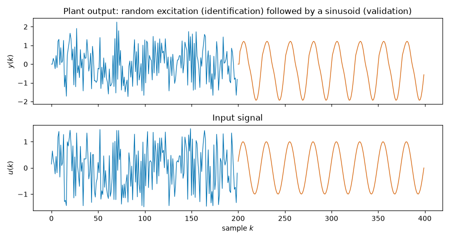
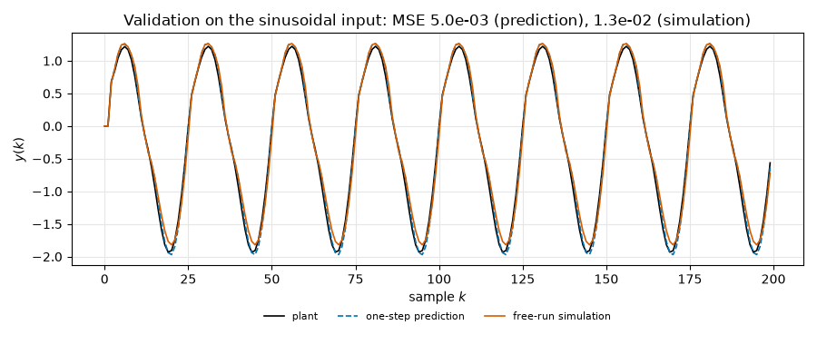
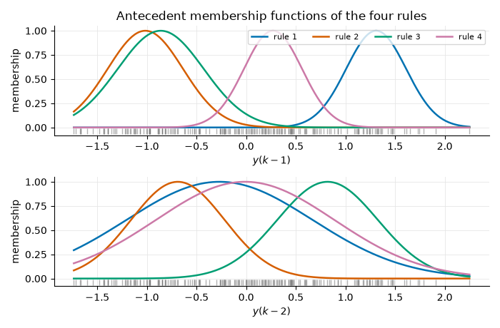
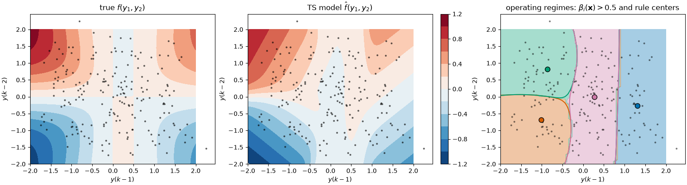
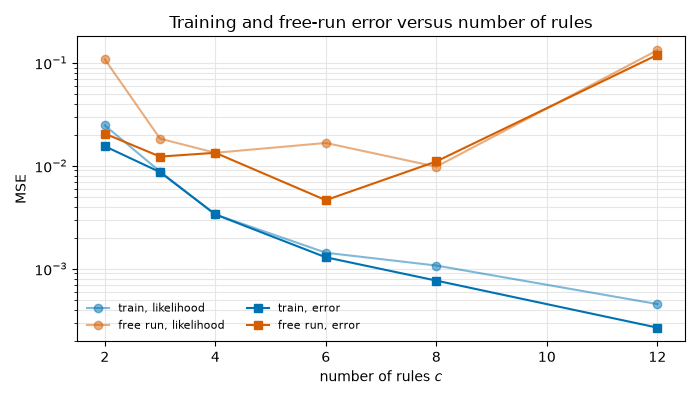

Note
Go to the end to download the full example code or to run this example in your browser via Binder.
Identification of a nonlinear dynamic system with free-run validation#
The second benchmark of Abonyi, Babuška, and Szeifert (2002) is the second-order nonlinear plant
The nonlinear component \(f\) is approximated by a Takagi–Sugeno model with the regressors \(\mathbf{x}_k=[y(k-1)\ y(k-2)]^T\), so every rule is a local linear ARX model and the rule base is a nonlinear ARX (NARX) model. As in the paper, 200 samples with a random input \(u(k)\in[-1.5, 1.5]\) are used for identification and 200 samples with the sinusoid \(u(k)=\sin(2\pi k/25)\) for validation. The demanding test of a dynamic model is the free-run simulation, in which the model is fed with its own past outputs instead of the measured ones, so errors can accumulate.
import matplotlib.pyplot as plt
import numpy as np
import pandas as pd
from fuzzyclust.models import (
TakagiSugeno,
make_second_order_plant,
plot_membership_functions,
second_order_plant_function,
)
from fuzzyclust.plotting import PALETTE
from fuzzyclust.preprocessing import make_regressors
Identification and validation data#
make_regressors() builds the regression
matrix of lagged outputs; the target of the model is the nonlinear part
\(y(k)-u(k)\).
# [snippet:data]
u_id, y_id = make_second_order_plant(n_samples=200, excitation="random", random_state=0)
u_val, y_val = make_second_order_plant(n_samples=200, excitation="sine", random_state=1)
def nonlinear_part(u, y):
Phi, target, names = make_regressors(y, n_a=2) # rows [y(k-1), y(k-2)], k = 2, ..., N-1
return Phi, target - u[2:], names
X_id, f_id, names = nonlinear_part(u_id, y_id)
X_val, f_val, _ = nonlinear_part(u_val, y_val)
print("regressors:", names)
# [/snippet:data]
fig, axes = plt.subplots(2, 1, figsize=(9, 4.8), sharex=True)
k = np.arange(400)
axes[0].plot(k[:200], y_id, color=PALETTE[0], lw=0.9)
axes[0].plot(k[200:], y_val, color=PALETTE[1], lw=0.9)
axes[0].set_ylabel("$y(k)$")
axes[0].set_title("Plant output: random excitation (identification) followed by a sinusoid (validation)")
axes[1].plot(k[:200], u_id, color=PALETTE[0], lw=0.9)
axes[1].plot(k[200:], u_val, color=PALETTE[1], lw=0.9)
axes[1].set_ylabel("$u(k)$")
axes[1].set_xlabel("sample $k$")
axes[1].set_title("Input signal")
plt.tight_layout()

regressors: ['y(k-1)', 'y(k-2)']
One-step prediction and free-run simulation#
With the identified model of \(f\), the one-step-ahead prediction uses
the measured past outputs, whereas the free-run simulation feeds back the
simulated ones. Because the input enters additively, the simulation loop
is written out explicitly here; for models whose regressor vector contains
the inputs, simulate_free_run() does the same (see
the MIMO example).
def free_run(model, u, y_init):
y_sim = np.zeros(u.shape[0])
y_sim[:2] = y_init
for k in range(2, u.shape[0]):
y_sim[k] = model.predict(np.array([[y_sim[k - 1], y_sim[k - 2]]]))[0] + u[k]
return y_sim
# [snippet:fit]
ts = TakagiSugeno(n_clusters=4, n_init=5, restart_criterion="error", random_state=0).fit(X_id, f_id)
y_pred = ts.predict(X_val) + u_val[2:] # one-step-ahead prediction of y(k)
y_sim = free_run(ts, u_val, y_val[:2]) # free-run simulation
# [/snippet:fit]
mse_pred = np.mean((y_pred - y_val[2:]) ** 2)
mse_sim = np.mean((y_sim[2:] - y_val[2:]) ** 2)
print(f"4 rules: MSE one-step {mse_pred:.2e}, free run {mse_sim:.2e} (variance of y: {y_val.var():.2f})")
fig, ax = plt.subplots(figsize=(9, 3.8))
ax.plot(y_val, "k-", lw=1.2, label="plant")
ax.plot(np.r_[np.full(2, np.nan), y_pred], color=PALETTE[0], lw=1.2, ls="--", label="one-step prediction")
ax.plot(y_sim, color=PALETTE[1], lw=1.2, label="free-run simulation")
ax.set_xlabel("sample $k$")
ax.set_ylabel("$y(k)$")
ax.set_title(f"Validation on the sinusoidal input: MSE {mse_pred:.1e} (prediction), {mse_sim:.1e} (simulation)")
ax.legend(frameon=False, fontsize=8, ncol=3, loc="upper center", bbox_to_anchor=(0.5, -0.16))
ax.grid(True, color="0.9")
plt.tight_layout()

4 rules: MSE one-step 5.02e-03, free run 1.34e-02 (variance of y: 1.19)
The model reproduces the validation output in free run although it has never seen a sinusoidal input: the four local linear models and their operating regions capture the nonlinearity well enough to be simulated.
Rules as operating regimes#
The antecedent sets are defined on the two lagged outputs. The second figure compares the identified surface \(\hat f(y_1, y_2)\) with the true nonlinearity on the region covered by the identification data; the dots are the identification samples.
fig, axes = plt.subplots(2, 1, figsize=(7, 4.6))
plot_membership_functions(ts, X=X_id, feature_names=["$y(k-1)$", "$y(k-2)$"], axes=axes)
axes[0].set_title("Antecedent membership functions of the four rules")
plt.tight_layout()
g = np.linspace(-2, 2, 60)
G1, G2 = np.meshgrid(g, g)
grid = np.c_[G1.ravel(), G2.ravel()]
F_true = second_order_plant_function(G1, G2)
F_hat = ts.predict(grid).reshape(G1.shape)
fig, axes = plt.subplots(1, 3, figsize=(15.5, 4.2), layout="constrained")
levels = np.linspace(-1.2, 1.2, 13)
for ax, Z, title in zip(axes[:2], (F_true, F_hat), ("true $f(y_1, y_2)$", "TS model $\\hat f(y_1, y_2)$"), strict=True):
cs = ax.contourf(G1, G2, Z, levels=levels, cmap="RdBu_r")
ax.scatter(X_id[:, 0], X_id[:, 1], s=4, color="k", alpha=0.5)
ax.set_title(title)
ax.set_xlabel("$y(k-1)$")
ax.set_ylabel("$y(k-2)$")
plt.colorbar(cs, ax=axes[:2], fraction=0.03, pad=0.02)
B = ts.firing_strengths(grid)
axes[2].contourf(G1, G2, B.argmax(axis=1).reshape(G1.shape), levels=np.arange(5) - 0.5,
colors=[PALETTE[i] for i in range(4)], alpha=0.35)
for i in range(4):
axes[2].contour(G1, G2, B[:, i].reshape(G1.shape), levels=[0.5], colors=[PALETTE[i]], linewidths=1.5)
axes[2].plot(*ts.centers_[i], "o", color=PALETTE[i], mec="k", ms=8)
axes[2].scatter(X_id[:, 0], X_id[:, 1], s=4, color="k", alpha=0.4)
axes[2].set_title(r"operating regimes: $\beta_i(\mathbf{x}) > 0.5$ and rule centers")
axes[2].set_xlabel("$y(k-1)$")
axes[2].set_ylabel("$y(k-2)$")


0.5$ and rule centers" class = "sphx-glr-multi-img"/>
Text(1079.5629775250773, 0.5, '$y(k-2)$')
The model matches the true surface where there are data and extrapolates linearly outside them, a property of local linear consequents that a model with constant consequents would not have. The right panel shows the operating regimes: the rules tile the input space, each dominating around its center.
Parameter study: number of rules and restart criterion#
The paper reports the mean squared error for 4 and 12 rules. Here the number of rules is scanned, and two ways of choosing among the random restarts of the clustering are compared: the mixture likelihood (the EM criterion) and the training error of the TS model. The two can pick different local optima.
# [snippet:scan]
rows = []
for c in (2, 3, 4, 6, 8, 12):
for criterion in ("likelihood", "error"):
model = TakagiSugeno(n_clusters=c, n_init=5, restart_criterion=criterion, random_state=0).fit(X_id, f_id)
sim = free_run(model, u_val, y_val[:2])
rows.append(
{
"rules": c,
"criterion": criterion,
"train MSE": np.mean((model.predict(X_id) - f_id) ** 2),
"test MSE (1-step)": np.mean((model.predict(X_val) - f_val) ** 2),
"test MSE (free run)": np.mean((sim[2:] - y_val[2:]) ** 2),
}
)
scan = pd.DataFrame(rows)
# [/snippet:scan]
print(scan.to_string(index=False, float_format=lambda v: f"{v:.2e}"))
fig, ax = plt.subplots(figsize=(7, 4))
for criterion, marker in (("likelihood", "o"), ("error", "s")):
sub = scan[scan["criterion"] == criterion]
ax.semilogy(sub["rules"], sub["train MSE"], marker + "-", color=PALETTE[0], alpha=0.5 if criterion == "likelihood" else 1,
label=f"train, {criterion}")
ax.semilogy(sub["rules"], sub["test MSE (free run)"], marker + "-", color=PALETTE[1],
alpha=0.5 if criterion == "likelihood" else 1, label=f"free run, {criterion}")
ax.set_xlabel("number of rules $c$")
ax.set_ylabel("MSE")
ax.set_title("Training and free-run error versus number of rules")
ax.legend(frameon=False, fontsize=8, ncol=2)
ax.grid(True, color="0.9", which="both")
plt.tight_layout()

rules criterion train MSE test MSE (1-step) test MSE (free run)
2 likelihood 2.47e-02 6.12e-02 1.08e-01
2 error 1.55e-02 1.17e-02 2.05e-02
3 likelihood 8.78e-03 5.35e-03 1.83e-02
3 error 8.67e-03 6.48e-03 1.23e-02
4 likelihood 3.37e-03 5.02e-03 1.34e-02
4 error 3.37e-03 5.02e-03 1.34e-02
6 likelihood 1.43e-03 5.06e-03 1.67e-02
6 error 1.29e-03 2.08e-03 4.63e-03
8 likelihood 1.07e-03 2.71e-03 9.80e-03
8 error 7.67e-04 2.82e-03 1.10e-02
12 likelihood 4.54e-04 1.30e-02 1.33e-01
12 error 2.68e-04 1.22e-02 1.19e-01
Take-away. A TS model identified by product-space clustering is a NARX model made of local linear ARX models; the regressors are lagged outputs (and inputs), and the antecedents are the operating regimes. Dynamic models should be validated in free run, not only by one-step prediction. More rules lower the training error, but the free-run error on a different excitation saturates early, because the validation data cover a region of the state space that the identification data have only partly explored. Random restarts matter for the exponential-distance clustering; selecting the restart by the TS training error is the safer choice when the model is used for prediction.
Total running time of the script: (0 minutes 3.999 seconds)